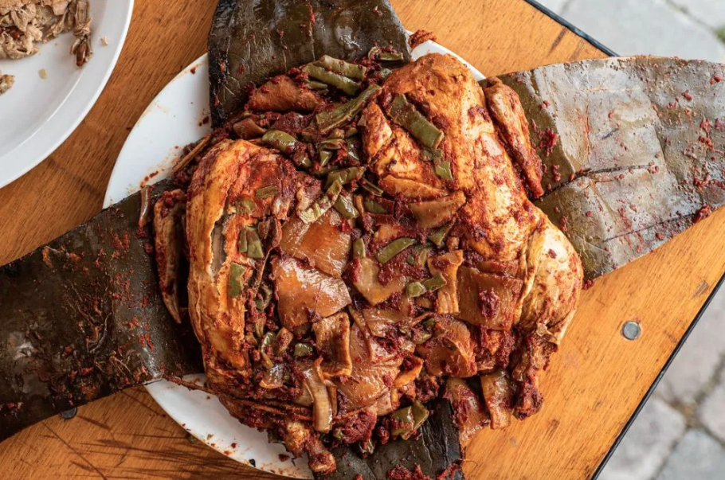
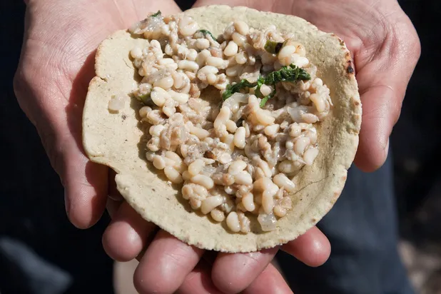
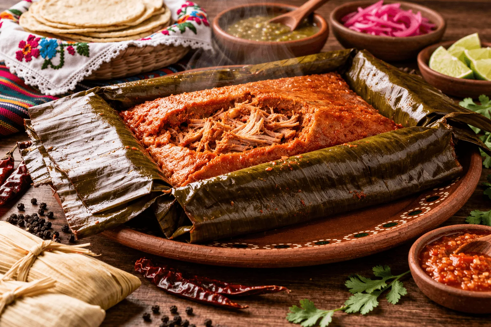
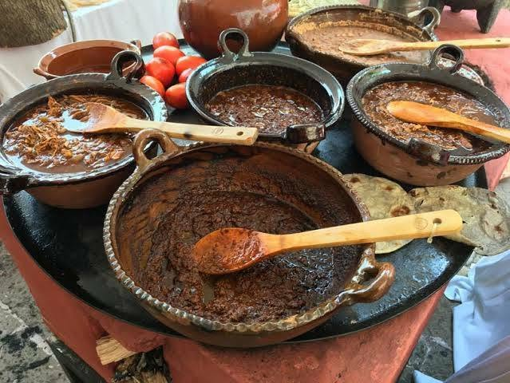
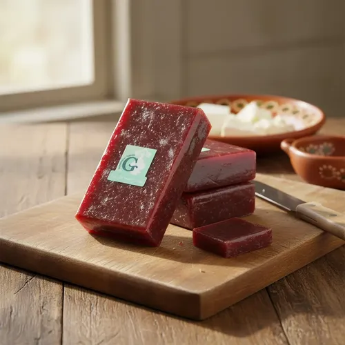

Barbacoa
Valle del Mezquital
Lamb slow-cooked in an underground pit lined with maguey leaves, traditionally served on weekends with consomé, tortillas and salsa. A symbol of Hidalgo’s Otomí heritage.
Representative foods of Hidalgo and the regions where they are prepared.
Valle del Mezquital
Lamb slow-cooked in an underground pit lined with maguey leaves, traditionally served on weekends with consomé, tortillas and salsa. A symbol of Hidalgo’s Otomí heritage.

Real del Monte & Mineral del Monte
Baked turnovers filled with potato and meat, tied to Cornish miners who arrived in the 19th century. Today they come in savory and sweet versions.

Valle del Mezquital
Seasoned meat marinated in chile pastes and steamed in a wrapping of maguey membrane or parchment.

Valle del Mezquital
An Otomí dish of meat steamed in maguey leaves with chiles and spices, cooked in a pit for hours.

Valle del Mezquital
Ant larvae sautéed with butter, onion and epazote. Known as “insect caviar,” a seasonal Pre-Hispanic delicacy.

Huasteca
A giant tamal of coarse masa and pork, wrapped in banana leaves and baked for many hours; made for celebrations and shared by the community.

Sierra Region
A blend of chilies, spices, and seeds, with a chicken or turkey filling; served with black beans and freshly made corn tortillas.

Highlands
A traditional fruit paste dessert, slowly cooked and sold in blocks, often paired with cheese.
Tell us about your family’s version.
Share Your Recipe